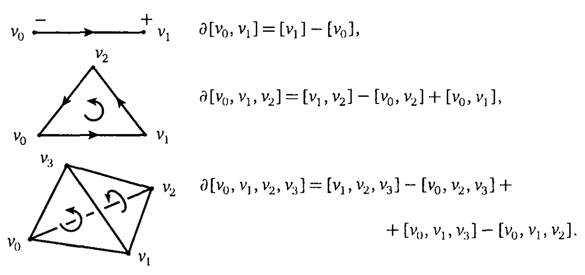
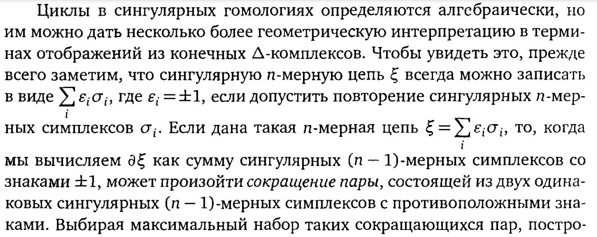
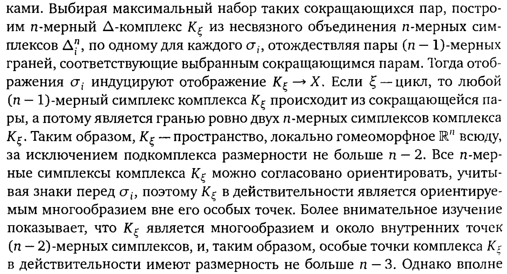
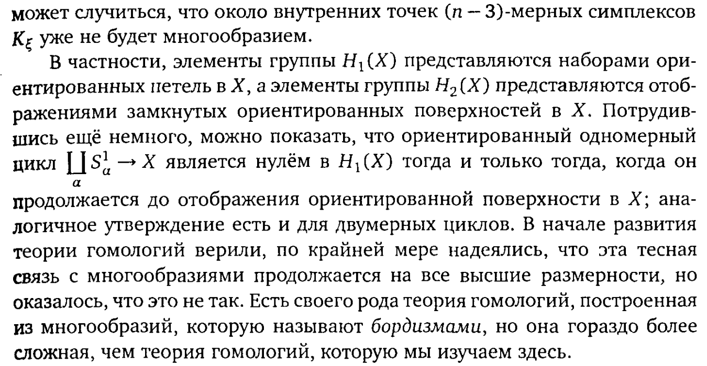

Фундаментальная группа полезна для изучения пространств малой размерности (потому что она – это отображения пространства малой размерности (отрезка в случаие петли и квадрата в случае гомотопии))
Поэтому для \(C-W\)-комплекса фундаментальная группа зависит только от двумерного остова комплекса, то есть фундаментальная группа не различает, например, сферы размерности \(\geqslant 2\).
Устранить этот недостаток группы \(\pi_1(X)\) (\(1\), кстати, потому что различает размерности до \(1\) включительно, а \(\pi\), потому что фундаментальная ;) можно введя гомотопические группы \(\pi_n(X)\), которые являются классами эквивалентности гомотопий отображений \(n\)-мерного куба \(I^n\) в \(X\). Группы \(\pi_n(X)\) различают сферы всех размерностей, так как \(\pi_i(S^n) = \mathbf{0}, \,\,\,\,i < n, \,\,\,\, \pi_n(S^n) = \mathbb{Z}\).
И все бы хорошо, но такие группы очень сложно считать. Поэтому придумали гомологические группы со сложнейшим определением и необходимостью понимать алгебру и теорию категорий, НО, вы не поверите, их проще считать.
Как и \(n\)-я гомотопическая группа, группа гомологий \(H^n(X)\) зависит только от \(n+1\)-мерного остова \(C-W\) комплекса.
\(H_i(S^n) \cong \pi_i(S^n), \,\,\,\, 1 \leqslant i \leqslant n\), но \(H_i(S^n) = 0, \,\,\,\, i > n\), что удобнее.
Чтоб не помереть от непонимания, сначала приводится несколько примеров, потом урезанная теория (симплициальные гомологии), потом идет общая теория (сингулярные гомологии), потом кучу свойств этих самых сингулярных гомологий, ну а потом (если я еще не отчаюсь) будут приложения всей этой мути.
Интересная особенность гомологий состоит в том, что чаще всего используются основные свойства гомологий, а не их определение. Это позволяет предположить, что к гомологиям возможен аксиоматический подход. Это действительно так и об этом будет сказано далее. Аксиомы гомологий алгебраические, поэтому можно считать, что гомологии чисто алгебраический объект, и геометрия, участвующая в определении, вторична.
Группа гомологий показывает каким образом \(n\)-мерные клетки приклеиваются к \(n - 1\)-мерным
Сингулярные гомологии – самая важная теория гомологий в алгебраической топологии.
Мы сначала рассмотрим более простые симплициальные гомологии, чтобы понять, как вообще работать с гомологиями.
Тут какие-то сложности в терминологии, но, кажется, это «полусимплициальный комплекс»
Определение: \(n\)-мерный симплекс (\(n\)-мерный аналог треугольника) – это наименьшее выпуклое пространство в \(\mathbb{R}^m\), содержащее \(n + 1\) точек \(v_0, \ldots, v_n\), которые не лежат в гиперплоскости размерности меньше, чем \(n\) (гиперплоскость – множество решений системы линейных уравнений) или, что тоже самое, векторы \(v_1 - v_0, \ldots, v_n - v_0\) должны быть линейно независимы.
Точки \(v_i\) – вершины симплекса, а симплекс обозначают \([v_0, \ldots, v_n]\).
Стандартный \(n\)-мерный симплекс – это \(\Delta^n = \left\{(t_0, \ldots, t_n)\in \mathbb{R}^{n + 1}|\,\,\,\, \displaystyle \sum_{i}t_i = 1, \,\,\,\, t_i \geqslant 0, \,\,\,\, \forall i\right\}\) (его вершины – это концы единичных векторов, направленные по координатным осям, а \(\displaystyle \sum_{i}t_i = 1\) – это плоскость перпендикулярная биссектрисе \(n\)-мерного угла, образующего первый квадрант (это первая четверть в \(n\)-мерном пространстве) координатной системы).
Для гомологий важен порядок вершин симплекса, поэтому \(n\)-мерный симплекс \(= \,\,\,\,n\)-мерный симплекс с указанным порядком вершин.
Пусть есть симплекс \([v_0, \ldots, v_n]\). Отображение \(\Delta^n \to [v_0, \ldots, v_n], \,\,\,\, (t_0, \ldots, t_n) \mapsto \displaystyle \sum_{i}t_i\cdot v_i\) – гомеоморфизм, который называется каноническим, а \(t_i\) – барицентрические координаты точки \(\displaystyle \sum_{i}t_i\cdot v_i\) в симплексе \([v_0, \ldots, v_n]\).
Если из симплекса удалить одну из вершин, то получим \(n - 1\)-мерный симплекс, который называется гранью симплекса.
Граница симплекса, которая обозначается \(\partial \Delta^n\) – это объединение всех граней симплекса.
Открытый симплекс обозначается \(\mathring{\Delta}^n\).
\(\Delta\)-комплекс определяется как \(C-W\)-комплекс, только шары заменяются на симплексы.
Определение: Структура \(\Delta\)-комплекса на пространстве \(X\) – это набор отображений \(\sigma_{\alpha}: \Delta^n \to X\), где \(n\) зависит от \(\alpha\) (по сути это отображения клеток-симплексов комплекса в \(X\)), такой, что выполнены условия:
Замечание: \(X\) можно построить как фактор-пространство симплексов.
Определение: Определим группы симплициальных гомологий для структуры \(\Delta\)-комплекса пространства \(X\).
Пусть \(\Delta_n(X)\) – свободная абелева группа, базисом которой служат открытые \(n\)-мерные симплексы \(e^n_{\alpha}\) (\(\operatorname{Cl}e^n_{\alpha} = \sigma_{\alpha}: \Delta^n \to X\)) комплекса \(X\). Элементы этой группы (формальные суммы \(\displaystyle \sum_{\alpha}n_{\alpha}e^n_{\alpha}\) или, так как \(e^n_{\alpha}\) определяется отображением \(\sigma_{\alpha}\), формальные суммы \(\displaystyle \sum_{\alpha}n_{\alpha}\sigma_{\alpha}, \,\,\,\, n_{\alpha} \in \mathbb{Z}\)) – n-мерные цепи.
Граница \(n\)-мерного симплекса \([v_0, \ldots, v_n]\) – это объединение граней \([v_0, \ldots, \hat{v}_i, \ldots, v_n]\), где \(\hat{v}_i\) обозначает, что \(i\)-я вершина удалена.
Чтобы представить границу \(n\)-мерного симплекса, как элемент группы (\(n - 1\)-мерную цепь) \(\Delta_{n - 1}(X)\), лучше не просто суммировать грани \([v_0, \ldots, \hat{v}_i, \ldots, v_n]\), а считать границей \(\displaystyle \sum_{i}(-1)^i[v_0, \ldots, \hat{v}_i, \ldots, v_n]\). (если смотреть на картинки, то при таком представлении учитывается ориентация)

Определим гомоморфизм \(\partial_n: \Delta_n(X) \to \Delta_{n - 1}(X): \sigma_{\alpha} \mapsto \displaystyle \sum_{i}(-1)^i{\sigma_{\alpha}}_{|[v_0, \ldots, \hat{v}_i, \ldots, v_n]}\) (проверить, что гомоморфизм), который называется граничным.
Собственно этот гомоморфизм – ключевая часть гомологий :), а следующее утверждение показывает, что построены гомологии.
Утверждение: Композиция \(\Delta_n(X) \overset{\partial_n}{\to} \Delta_{n - 1}(X) \overset{\partial_{n - 1}}{\to} \Delta_{n - 2}(X)\) – нулевое отображение.
Доказательство:
\(\partial_n(\sigma_{\alpha}) = \displaystyle \sum_{i}(-1)^i{\sigma_{\alpha}}_{|[v_0, \ldots, \hat{v}_i, \ldots, v_n]}\)
\(\partial_{n - 1}\partial_n = \displaystyle \sum_{j < i}(-1)^i(-1)^j{\sigma_{\alpha}}_{|[v_0,\ldots, \hat{v}_j, \ldots, \hat{v}_i, \ldots, v_n]} + \displaystyle \sum_{i > j}{\sigma_{\alpha}}_{|[v_0,\ldots, \hat{v}_i, \ldots, \hat{v}_j, \ldots, v_n]}\) (это так, потому что если \(j < i\), то с нумерацией ничего не происходит, потому что она еще не была затронута (оттуда ничего не выкинули), а при \(j > i\) уже выкинули вершину и нужно сдвинуть индексы на один назад) дальше сокращаем суммы \(\,\,\,\,\blacksquare\)
Определение: Последовательность:
\[\ldots \to C_{n + 1} \overset{\partial_{n + 1}}{\to} C_n \overset{\partial_{n}}{\to} C_{n - 1} \to \ldots \to C_1 \overset{\partial_1}{\to} C_0 \overset{\partial_0}{\to} 0,\]
где \(C_n\) – абелева группа, а \(\partial_{n + 1}\partial_{n} = 0 \,\,\,\, \forall n\) – цепной комплекс.
Из условия \(\partial_{n + 1}\partial_{n} = 0 \forall n\) следует, что \(\operatorname{Img}\partial_{n + 1} \subset \operatorname{Ker}\partial_n\), поэтому определим:
\(H_n = \operatorname{Ker}\partial_n / \operatorname{Img}\partial_{n + 1}\) – \(n\)-я группа гомологий цепного комплекса \((C_n, \partial)\),
Элементы \(\operatorname{Ker}\partial_n\) – циклы,
Элементы \(\operatorname{Img}\partial_{n + 1}\) – границы,
Элементы \(H_n\) – классы гомологий.
В случае \(C_n = \Delta_n(X)\) группа гомологий \(\operatorname{Ker}\partial_n / \operatorname{Img}\partial_{n + 1}\) называется \(n\)-й группой симплициальных гомологий.
Часто вводят симплициальные гомологии на симплициальных комплексах.
Симплициальный комплекс – это семейство \(K\) подмножеств множества \(\{1, \ldots, n\}\), такое, что \(\forall K' \in K\) в \(K\) содержатся все подмножества \(K'\).
Ща бахнем код. Я в себя верю. Уже нет.
Зависят ли группы гомологий от выбора \(\Delta\)-комплекса на \(X\)? (То есть, если два комплекса гомеоморфны, то изоморфны ли их группы гомологий? Или еще сильнее, будут ли изоморфны группы гомологий, если пространства лишь гомотопически эквивалентны?)
Определение: Сингулярный \(n\)-мерный симплекс в пространстве \(X\) – это отображение \(\sigma: \Delta^n \to X\). (Отображение, конечно, непрерывное.)
Пусть \(C_n(X)\) – свободная абелева группа с базисом, состоящим из сингулярных \(n\)-мерных симплексов в \(X\).
Элементы \(C_n(X)\) – цепи (сингулярные \(n\)-мерные цепи :) Это конечные формальные суммы \(\displaystyle \sum_{i}n_i \sigma_i\), где \(\sigma_i: \Delta^n \to X\) и \(n_i \in \mathbb{Z}\). (а если базис бесконечный? и может ли он быть бесконечным?)
Граничное отображение: \(\partial_n(\sigma) = \displaystyle \sum_{i = 1}^{n}(-1)^n \sigma_{|[v_0, \ldots, \hat{v}_i, \ldots, v_n]}\).
Доказательство утверждения применимо и к сингулярным симплексам, поэтому \(\partial_n \partial_{n + 1} = 0\) и, следовательно, можем определить:
\(H_n(X) = \operatorname{Ker}\partial_n / \operatorname{Img}\partial_{n + 1}\) – \(n\)-я группа гомологий пространства \(X\).
Лемма: Гомеоморфные пространства имеют изоморфные группы сингулярных гомологий.
Доказательство:
Пусть \(X \cong Y\), то есть \(\exists f: X \to Y, \,\,\,\, f\) – биективно и непрерывно в обе стороны.
\(f_{\star}: H_n(X) \to H_n(Y): \sigma \to f\circ \sigma\) ну и \(\,\,\,\,\blacksquare\)
Появились вопросики: почему \(H_n(X)\) конечно порожденная для \(\Delta\)-комплекса с конечным числом симплексов (у нас ведь произвольные отображения)? И почему \(H_n(X) = 0\), если \(n\) больше размерности комплекса.
Вообще сингулярные гомологии можно рассматривать как частный случай симплициальных, просто взяв сингулярный комплекс пространства \(X\), который определяется, как \(\Delta\)-комплекс, имеющий по одному \(n\)-мерному симплексу для каждого сингулярного симплекса.

Это понятно.

«Таким образом, \(K_{\xi}\) – пространство, локально гомеоморфное \(\mathbb{R}^n\) почти всюду, за исключением подкомплекса размерности не больше \(n - 2\)» – ничего не понятно. Ну и, видимо, до этого тоже условно понятно :(

Ура! БОРДИЗМ
Утверждение: Пусть \(X_{\alpha}\) компоненты линейной связности пространства \(X\). Тогда \(H_n(X) = \bigoplus_{\alpha}H_n(X_{\alpha})\).
Доказательство:
Образ линейно связного пространства линейно связен, поэтому все образы сингулярных \(n\)-мерных симплексов не выходят за компоненты линейной связности. Поэтому можем собрать \(C_n(X)\) как прямую сумму \(C_n(X_{\alpha})\). При этом сохраняются граничные отображения и, следовательно, группы гомологий \(\,\,\,\,\blacksquare\)
Утверждение: Пусть \(X\) непусто и линейно связно. Тогда \(H_0(X)\cong \mathbb{Z}\). И, следовательно, для непустого пространства \(X \,\,\,\, H_0(X) \cong \mathbb{Z}^{\bigoplus m}\), где \(m\) – количество компонент линейной связности.
Доказательство:
Утверждение: Если \(X\) точка, то \(H_0(X = \mathbb{Z}\) и \(H_n(X) = 0, \,\,\,\, n \geqslant 1\).
Второе типо очев, да? Но нет, у нас же отображения.
Доказательство:
Первый существенный (будущий) результат этой главы: гомотопически эквивалентные пространства имеют изоморфные группы гомологий.
Определение: Пусть \(X\) и \(Y\) топологические пространства и \(f: X \to Y\). Определим индуцированный гомоморфизм \(f_{\star}: C_n(X) \to C_n(Y): \sigma \mapsto f\circ \sigma\).
Лемма: \(f_{\star}\circ \partial = \partial \circ f_{\star}\).
Доказательство: \(\,\,\,\,\blacksquare\)
Получили коммутативную диаграмму:
\[\begin{CD} \ldots @>>> C_{n + 1}(X) @>\partial>> C_n(X) @>\partial>> C_{n - 1}(X) @>>> \ldots\\ @VVV @Vf_{\star}VV @Vf_{\star}VV @Vf_{\star}VV @VVV\\ \ldots @>>> C_{n + 1}(Y) @>\partial>> C_n(Y) @>\partial>> C_{n - 1}(Y) @>>> \ldots \end{CD}\]
Определение: Отображение \(f_{\star}\), для которого диаграмма выше коммутативна, – цепное для сингулярных комплексов \(C(X)\) и \(C(Y)\).
Утверждение: Цепное отображение \(f_{\star}\) двух комплексов индуцирует гомоморфизм \(f_{*}\) групп гомологий.
Доказательство:
Теорема: Если два отображения \(f, g: X \to Y\) гомотопны, то \(f_{*} = g_{*}\).
Доказательство: